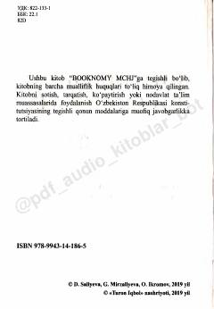

RTGrammatikasiz va yodlashlarsiz rus tilini tezkor o'rganish uchun innovatsion qo'llanma.
Ushbu o'quv qo'llanma rus tilini grammatika va yodlash mashqlarisiz, tabiiy va tezkor usulda o'rganishga mo'ljallangan. Kitob Amerika ta'lim texnologiyalari asosida ishlab chiqilgan bo'lib, tinglash va kuzatish orqali tilni ravon o'zlashtirishni kafolatlaydi.